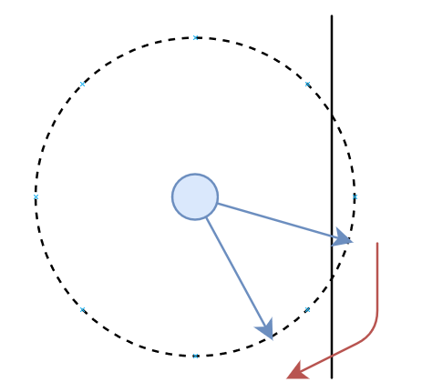

Cartographie Collective
Willy Jacquet, Université Claude Bernard Lyon 1
Ce projet a été réalisé dans le cadre de l'UE LIFPROJET du semestre de printemps 2020 à l'université Claude Bernard Lyon 1.
Voir
http://perso.univ-lyon1.fr/fabien.rico/site/projet:start.
Introduction
L'intelligence collective désigne la capacité d'une communauté à faire converger intelligence et connaissances pour avancer vers un but commun.
Elle résulte des interactions entre ses membres (ou agents).
Alors que la connaissance des agents est limitée, dont leur perception de l'environnement et leur conscience de la totalité des éléments pertinents,
de comportements simples peuvent émerger la résolution de tâches complexes.
Ce projet tente alors de proposer un modèle minimal pour l'intelligence collective et s'incrit dans la lignée des travaux de modélisations de phénomènes naturels -
tels que les Boids de Craig W. Reynolds.
Le champ d'application est large: modélisation pour l'informatique graphique, génération procédurale, microrobotique, etc.
L'aspect principal qui a été choisi est celui de la cartographie ou
la manière par laquelle des agents peuvent établir des chemins entre des points d'intérêts à partir d'une configuration vierge.
Et ce par le seul moyen d'un milieu supportant des signaux - de nature chimique par exemple.
On retrouve des cas similaires dans la nature comme
les fourmis (signaux par leurs phéromones),
les termites (signaux via leurs contructions) ou encore
Physarum polycephalum.
Critères d'évaluation
Performances.
Le modèle se doit d'être adapté aux méthodes informatiques.
Les contraintes ont donc été considéré de sorte à ce que les algorithmes naifs soient convenables.
Cartographie.
Tout agent doit effectuer un trajet d'un point d'intérêt à un autre.
Alors que le milieu initial est complètement aléatoire, du comportement conjugué des individus se doivent d'apparaître des chemins.
C'est à dire que les agents cessent progressivement leur exploration et commencent à former des "files" partant d'un point d'intérêt pour en rejoindre un autre.
Adaptabilité.
Afin de démontrer véritablement l'émergence d'une intelligence de groupe,
le modèle doit pouvoir supporter la variation de plusieurs paramètres (nombre d'agents, nombre et disposition des points d'intérêts)
et différents terrains (labyrinthes, terrain vague, obstacle central).
Stabilité.
Au-delâ d'un certain temps, le modèle devrait se trouver dans une configuration localement optimale.
Modélisation
La simulation s'effectue dans un espace à deux dimensions.
Description
Minimalisme.
Du fait du caractère émergent, il est complexe de prédire les répercutions de variations, même minimes.
Il a dont été fait le choix de retenir le modèle le plus simple possible afin de pouvoir conserver une certaine intuition.
Attributs.
Une position est représentée par un vecteur de deux flottants (8 octets),
une direction par un flottant (4 octets) ,
une information de trajet par un identifiant source et un identifiant destination (8 octets) et
une information de praticabilité par un flottant normalisé (4 octets).
Un agent est représenté par une position et une direction.
Un point d'intérêt est représenté par une position.
Le rayon d'appartenance au point d'intérêt est communément défini.
On appelera source le point d'intérêt de départ d'un agent et
destination son point d'arrivé.
Le milieu associé à un point d'intérêt est représenté par un champs de directions à deux dimensions.
Les directions sont initialisées aléatoirement.
Un milieu peut être assimilé à un support d'informations partagé dont l'information d'un signal est une direction.
Le terrain est représenté par un champs d'informations de praticabilité à deux dimensions.
De cette manière, il peut être assimilé à une image en niveaux de gris.
Résolution.
Les milieux associés aux points d'intérêts ont la même résolution que le terrain dans le but d'établir une correspondance.
Le terrain a été choisi comme référence, puisqu'il est la donnée dont la résolution est la plus complexe à modifier - cela requerrait des stratégies d'interpolation ou de régression.
Comportements
Émission.
Un agent se voit aléatoirement assigné une source et une destination.
Il est ensuite émis dans une direction aléatoire à partir de la source.
Déplacements.
Un agent se déplace d'une unité selon sa direction à chaque itération.
Ce choix permet une correspondance avec la résolution de la simulation et
donc empêche les trajectoires discontinues.
Trajet.
L'information de trajet pour un agent définit plus des modalités qu'un but véritable.
L'agent peut lire et modifier le milieu source mais seulement lire le milieu destination.
Lorsqu'un agent atteint son point d'intérêt destination, l'information de trajet s'inverse et
il est émis à nouveau à sa nouvelle source - ie. son ancienne destination.
Localité.
Un agent ne peut interagir avec les milieux que sur sa propre position.
Cela force une connaissance de l'environnement la plus restreinte possible.
Cette connaissance peut être étendue à des positions proches.
Éloignement de la source.
Tout agent cherche à s'éloigner de la source.
Pour ce faire, il va construire un fil d'Ariane;
l'agent va transformer le signal du milieu source sur sa position pour qu'il indique l'opposé de sa propre direction.
Cette information permettra également à d'autres agents qui viendraient sur cette position de savoir comment s'éloigner ou se rapprocher de la source
Exploration initiale.
Le milieu source permet d'orienter les agents vers des zones moins explorées et
le milieu destination de rajouter un bruit de par son initialisation aléatoire.
De l'éloignement et du bruit émerge alors un comportement d'exploration collective.
Rapprochement de la destination.
Tout agent va s'orienter vers la direction du signal du milieu destination sur sa position.
Alors que cela ne constitue qu'en un bruit en début de simulation,
lorsqu'un agent entre en contact avec des zones renseignées du milieu destination,
il va pouvoir suivre les signaux jusqu'à la destination.
Chemins.
Lorsqu'un flux d'agents se créée entre deux points d'intérêt, une structure semblable à une chemin se forme.
Ces chemins sont l'aboutissement du modèle et le principal critère d'appréciation.
On peut leur observer plusieurs propriétés, notamment la captation des agents.
Cycles.
Il arrive de manière spontanée que des cycles se forment, cela à pour effet de capter les agents et de nuire à leur contribution.
Cela est causé par la connaissance trop partielle des agents de leur environnement et tend à se produire sur des configurations anguleuses.
Une perturbation extérieure au cycle (un groupe d'agents) peut entraîner leur dégénération.

Collisions.
Lorsqu'un agent se retrouve en zone impraticable, il se déplace inversement à sa direction et se redirige aléatoirement dans un champs de 180° devant lui.
Puisque l'agent n'a pas connaissance de l'angle d'incidence, il ne peut réagir en conséquence.
La rotation aléatoire permet d'une part d'éviter que l'agent ne se bloque dans une situation avant-arrière
et permet d'autre part que l'agent soit statistiquement redirigé vers le rayon réfléchi plutôt que celui d'incidence.
Extensions
Certaines de ces pistes ont été exploré ou n'ont pas suscité d'intérêt suffisant par les présentes contraintes.
Elles peuvent cependant permettre d'étendre le modèle et restent dignes d'une plus grande considération.
Correction des chemins.
Une stratégie de lissage des chemins permettrait d'éliminer les chemins redondants et de minimiser leur distance.
Durée de vie.
Une telle information pourrait permettre l'établissement de statistiques et donc de critères d'évaluation plus précis
ainsi que d'accroître la vitesse de formation et la qualité des chemins.
Information portée par le signal.
Alors que l'information portée par un signal a été défini comme directionnelle,
il est envisageable que celle-ci soit temporelle, encore différente ou une combinaison de plusieurs informations.
Continuité des milieux.
L'introduction de l'illusion de continuité des millieux peut être réalisé par une stratégie d'interpolation.
Confiance.
Il est possible de pondérer les interactions en ajoutant aux agents et aux signaux une valeur de confiance.
Cette information permettrait des comportements plus élaborés.
Récupération.
Des contraintes de ravitaillement, de maintenance ou de préservation des agents peuvent nécéssiter le retour périodique des agents à un point d'intérêt.
Un agent pourrait, par exemple, décider de remonter jusqu'à la source si sa confiance est trop basse.
Un mécanisme de communication inter-agent pourrait augmenter la fiabilité si les signaux du milieu source sont insuffisants.
Évènements.
Pour tester la flexibilité du modèle, il pourrait être intéressant de procéder à des modifications du terrain durant la simulation.
Cela permettrait également de modéliser des contraintes supplémentaires comme des évènements naturels inattendus.
Altération du milieu.
Une telle contrainte - dissipation chimique, effets météorologique, etc - peut être modélisée par une variation des signaux des milieux à chaque itération.
Réduction des milieux.
Il ne semble pas impossible que les milieux associés aux points d'intérêts puissent être réduit en un unique milieu pour tous.
La suspicion d'une telle possibilité provient du Physarum polycephalum qui peut établir des réseaux entre plusieurs points à partir d'un unique support.
Dimensions supérieurs.
Le modèle est extensible aux dimensions supérieurs.
Cela nécessiterait néanmoins un investissement technique supplémentaire - partionnement, visualisation, etc.
Spécificités
Une telle modélisation permet d'établir une méthode de résolution sans connaissance préalable de l'environnement.
Cependant elle ne fournit aucune garantie quand à l'optimilatité des chemins,
ni même à la découverte d'un chemin.
Implémentation
Le programme de démonstration a été écrit en C++14 à l'aide de la bibliothèque standarde et de la bibliothèque multimédia SFML-2.5.
Le lecteur est invité à consulter le code source commenté pour avoir le détail de l'implémentation.
Voir
https://forge.univ-lyon1.fr/p1806811/collective-cartography
Plusieurs scénarios sont mis à dispositions.
Il est possible d'en sélectionner un parmis les prédéfinis via la ligne de commande.
La simulation permet généralement l'établissement des chemins en quelques secondes - ie. quelques milliers d'itérations.
Considérations
Résolution.
Étant stockée dans la mémoire graphique, la résolution du terrain - donc de la simulation - est limitée par des considérations matérielles.
Cela pourrait être résolu par le partitionnement du terrain.
Allocation mémoire.
La mémoire nécessaire à la simulation est pré allouée et est donc constante durant son exécution.
Temps réel.
Le programme de démonstration peut supporter 10 6 agents, une dizaine de points d'intérêts et s'éxecuter à 60 images par seconde.
Conception orientée données.
Une implémentation bas niveau a été sélectionné afin de réduire les défauts de cache et de bénéficier de la prédiction de branche.
La mise en oeuvre principale consiste en Array of Structures vs. Structure of Arrays.
Parallèlisation.
Les seules ressources partagées par les agents sont les milieux.
Suivant les stratégies d'accès concurrents à ceux-ci,
l'implémentation peut être parallèlisée sur plusieurs unités de calculs - GPU, CPU multi-coeurs - pour un gain de performances supplémentaire.
Déroulement
Je m'intéresse principalement à des domaines de l'informatique graphique - génération procédurale et modélisation géométrique.
Ainsi je n'étais pas vraiment enthousiaste par les sujets proposés pour cette UE,
j'en ai donc pris un qui puisse être visuellement intéressant et dont le principe m'intéressait - à savoir les systèmes multi-agents.
Le projet initial devait étendre le modèle des Boids de Craig W. Reynolds.
L'espace fut réduit de trois dimensions à deux afin de réduire l'investissement technique.
Et la recherche d'un objectif pour les agents amena au présent sujet.
Le caractère émergent du projet fut vraiment pénible;
trop souvent l'intention d'une modification au niveau d'un agent ne se répercutait pas à l'échelle globale.
Cela mena à de très nombreuses expérimentions dont peu aboutissaient; la progression était quasiment à l'arrêt.
Le déroulement devint assez angoissant jusqu'à la mise en place de principes plus strictes - dont et surtout le minimalisme du modèle.
A partir de là, l'avancement reprit.
Je me suis finalement assez peu inspiré de travaux existants et j'ai suivi une direction plutôt instinctive.
La majeure partie de l'effort a été fourni sur la modélisation plutôt que la technique - contrairement à mes projets personnels habituels.
Je n'estime pas que le projet soit abouti, néanmoins je pense avoir obtenu des résultats satisfaisants.
J'en tire des connaissances et une organisation qui me serviront surement dans mes prochains projets.
Remerciements
Je remercie Samir Aknine, professeur à l'université Claude Bernard Lyon 1, pour avoir encadré ce projet et proposé des pistes intéressantes.